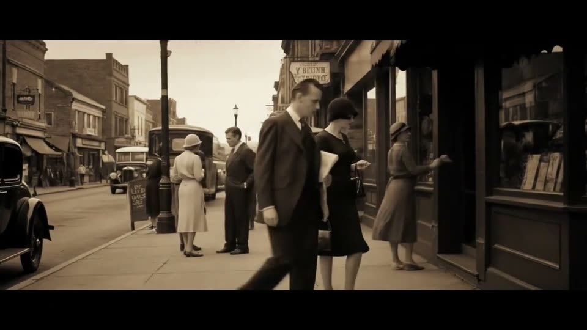

A vintage 1920s street scene, sepia toned, film grain, with ch…
GRN-018Grain / FilterGoogle Veo (official guide example)by Google Cloud (official Veo prompt guide)2026-10-17

Example: The following video and prompt demonstrates a vintage artistic style
Prompt
A vintage 1920s street scene, sepia toned, film grain, with characters in period attire
Our Seedance 2.5 adaptation
[ADAPTED for Seedance 2.5 by Grok Bot; not the creator's prompt. Follows the official BytePlus Seedance 2.5 prompt guide: asset binding → one-sentence summary → integer-second timeline → consistency notes → negatives.] API: duration 12, ratio 4:3, resolution 1080p, generate_audio true. Summary: A 12-second sepia-toned 1920s city street scene in period attire, styled as authentic hand-cranked silent-era newsreel footage. 0-4s: Wide static shot of a busy street. Model T-era cars, horse carts, men in flat caps and suits, women in cloche hats and drop-waist dresses. 4-8s: Slight undercranked speed-up. A newsboy waves papers toward the lens and pedestrians glance at the camera with period curiosity. 8-12s: Slow pan across shop awnings as a streetcar passes. Hold on the street. Film look: sepia tone, heavy organic grain, gate weave, flicker, dust and scratches, soft vignette, slightly uneven exposure. Negatives: no modern vehicles, signage, clothing or smartphones. No subtitles, no intertitles. Audio: optional projector whir and faint street ambience only. No BGM.
Tags: sepia, vintage 1920s, film grain